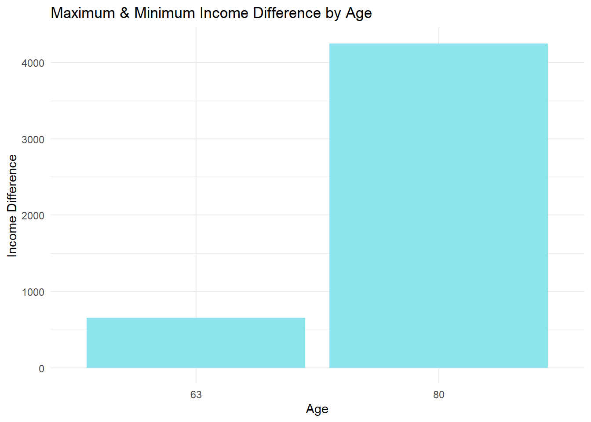

Code
# Task 1 & 2
# import API keys
alpha_vantage_key <- readLines("AlphaVantageAPIKey.txt", warn = FALSE)[1] # api key located on first line of txt file
FRED_key <- readLines("FREDAPIKey.txt", warn = FALSE)[1]This mini project will explore an example of personal financial decision making with R. Within the scope of this project, the following will be done:
This will specifically focus on CUNY employee retirement plans. Newly hired faculty have 30 days to choose between two retirement plans. It can be difficult to assess which plan would be better in the long run dependent on a multitude of factors in life. This project will explore historical financial data and use a bootstrap inference strategy to estimate the probability that one plan is better than the other dependent on circumstances.
The first plan CUNY offers is a Teachers Retirement System (TRS) plan. The TRS plan is a traditional pension program, the employer will pay a fraction of the employee’s salary until death. The TRS is a defined benefit plan where the employer takes on the market risk and covers the expenses in the long term if the market under performs.
The TRS plan outline:
Employees pay a fixed percentage of their paycheck into the pension fund. For CUNY employees joining after March 31, 2012–which you may assume for this project–the so-called “Tier VI” contribution rates are based on the employee’s annual salary and increase as follows:
The retirement benefit is calculated based on the Final Average Salary of the employee: following 2024 law changes, the FAS is computed based on the final three years salary. (Previously, FAS was computed based on 5 years: since salaries tend to increase monotonically over time, this is a major win for TRS participants.)
If \(N\) is the number of years served, the annual retirement benefit is:
In each case, the benefit is paid out equally over 12 months.
The benefit is increased annually by 50% of the CPI, rounded up to the nearest tenth of a percent: e.g., a CPI of 2.9% gives an inflation adjustment of 1.5%. The benefit is capped below at 1% and above at 3%, so a CPI of 10% leads to a 3% inflation adjustment while a CPI of 0% leads to a 1% inflation adjustment.
The inflation adjustement is effective each September and the CPI used is the aggregate monthly CPI of the previous 12 months; so the September 2024 adjustment depends on the CPI from September 2023 to August 2024.
The optional retirement plan (OPR) is in line with a traditional 401(k) plan. Both the employer and employee make contributions into a retirement account. The investments are made in the employee’s choice of mutual funds. At retirement, the employee will be able to access those funds and withdraw as they like. For this analysis it can be assumed that the investments are made with the following allocation:
Under the ORP, both the employee and the employer make monthly contributions to the employee’s ORP account. These returns are calculated as a percentage of the employee’s annual salary. Specifically, the employee contributes at the same rate as the TRS:
The employer contribution is fixed at:
You may assume that the contributions are immediately invested according to the asset allocations above.
The power of compounding interest allows for investments to grow at an exponential rate over time. More detailed explanation of compounding interest can be found here. The final value of the investment should be much greater than what was contributed over time.
The data sources used in this project will be accessed from Alpha Vantage and the Federal Reserve Economic Data (FRED). A free API key can be obtained for both sites to access the data used in this analysis. All that’s required is to sign up for an account on the site to access the API keys.
The Alpha Vantage API key can be claimed here and be used with the supporting documentation.
The FRED API key can be claimed here and be used with the supporting documentation.
The API keys are linked to the account you signed up with. In the following code I provide, I will read into R my API keys from a text file, and reproduction should be done so as well to not publish your personal API key.
# Task 1 & 2
# import API keys
alpha_vantage_key <- readLines("AlphaVantageAPIKey.txt", warn = FALSE)[1] # api key located on first line of txt file
FRED_key <- readLines("FREDAPIKey.txt", warn = FALSE)[1]The following libraries will be used in this project:
library(dplyr)
library(tidyr)
library(httr2)
library(lubridate)
library(DT)
library(ggplot2)The relevant data series we need to acquire for our analysis is the following:
The following code chunks will import the data using both the Alpha Vantage API and FRED API. The first four code chunks will import data using the Alpha Vantage API. The last two code chunks will use the FRED API to import the data.
The first data series to be imported will be the US equity market total returns. For the purposes of this project, I will be using SPY as the tracker. There are other equivalent indicators that can be used too.
# Task 3: Data Acquisition
# Alpha Vantage API documentation lets us know exactly what data we can find
# US Equity Market total returns, represented by SPY for our case
# Function to get TIME_SERIES_DAILY data
get_sp500_data <- function(api_key) {
response <- request("https://www.alphavantage.co/query") |>
req_url_query(
`function` = "TIME_SERIES_DAILY", # Backticks for reserved word
symbol = "SPY", # S&P 500 ETF symbol
apikey = api_key,
outputsize = "full", # Full dataset
datatype = "json" # JSON format
) |>
req_perform()
# Parse the response as JSON
data <- resp_body_json(response, simplifyVector = TRUE)
return(data)
}
sp500_data <- get_sp500_data(alpha_vantage_key)
# Extract the time series data
spy_time_series <- sp500_data$`Time Series (Daily)`
# Convert the nested list to a data frame
spy <- as.data.frame(do.call(rbind, spy_time_series))
# Add the dates as a column
spy <- cbind(date = rownames(spy), spy)
# Reset rownames
rownames(spy) <- NULL
# Rename columns for the regular time series data
colnames(spy) <- c(
"date",
"open",
"high",
"low",
"close",
"volume"
)
# Convert columns to correct types
spy <- transform(spy,
date = as.Date(date),
open = as.numeric(open),
high = as.numeric(high),
low = as.numeric(low),
close = as.numeric(close),
volume = as.numeric(volume)
)The next series to be imported is the international equity market total returns. In this analysis, FDIVX will be used to measure the international market.
# International Equity Market total returns
# Function to get TIME_SERIES_DAILY data
get_FDIVX_data <- function(api_key) {
response <- request("https://www.alphavantage.co/query") |>
req_url_query(
`function` = "TIME_SERIES_DAILY", # Backticks for reserved word
symbol = "FDIVX", # Fidelity International Growth Fund symbol
apikey = api_key,
outputsize = "full", # Full dataset
datatype = "json" # JSON format
) |>
req_perform()
# Parse the response as JSON
data <- resp_body_json(response, simplifyVector = TRUE)
return(data)
}
FDIVX_data <- get_FDIVX_data(alpha_vantage_key)
# Extract the time series data
FDIVX_time_series <- FDIVX_data$`Time Series (Daily)`
# Convert the nested list to a data frame
FDIVX <- as.data.frame(do.call(rbind, FDIVX_time_series))
# Add the dates as a column
FDIVX <- cbind(date = rownames(FDIVX), FDIVX)
# Reset rownames
rownames(FDIVX) <- NULL
# Rename columns for the regular time series data
colnames(FDIVX) <- c(
"date",
"open",
"high",
"low",
"close",
"volume"
)
# Convert columns to correct types
FDIVX <- transform(FDIVX,
date = as.Date(date),
open = as.numeric(open),
high = as.numeric(high),
low = as.numeric(low),
close = as.numeric(close),
volume = as.numeric(volume)
)To track inflation, I will use the consumer price index (CPI) as an indicator of inflation over time.
# Inflation
get_inflation_data <- function(api_key) {
response <- request("https://www.alphavantage.co/query") |>
req_url_query(
`function` = "CPI", # Backticks for reserved word, CPI is widely regarded as the barometer of inflation levels in the broader economy
apikey = api_key,
outputsize = "full", # Full dataset
datatype = "json" # JSON format
) |>
req_perform()
# Parse the response as JSON
data <- resp_body_json(response, simplifyVector = TRUE)
return(data)
}
inflation_data <- get_inflation_data(alpha_vantage_key)
inflation <- inflation_data$data
colnames(inflation) <- c(
"date",
"index_value"
)
inflation <- transform(inflation,
date = as.Date(date),
index_value = as.numeric(index_value)
)For the short term debt returns, I will be using the 2 year US Treasury Yield as an indicator.
# short-term debt returns, using the 2 year us treasury yield
get_short_term_yield_data <- function(api_key) {
response <- request("https://www.alphavantage.co/query") |>
req_url_query(
`function` = "TREASURY_YIELD", # Backticks for reserved word
maturity = "2year",
apikey = api_key,
outputsize = "full", # Full dataset
datatype = "json" # JSON format
) |>
req_perform()
# Parse the response as JSON
data <- resp_body_json(response, simplifyVector = TRUE)
return(data)
}
short_term_yield_data <- get_short_term_yield_data(alpha_vantage_key)
short_term_yield <- short_term_yield_data$data
colnames(short_term_yield) <- c(
"date",
"percent_value"
)
short_term_yield <- transform(short_term_yield,
date = as.Date(date),
percent_value = as.numeric(percent_value)
)For wage growth, I will be using the median weekly earnings in America. The specific series from FRED is LES1252881600Q.
# FRED API documentation isn't as direct as Alpha Vantage's
# Need to search specifically for data of interest to find what we want. This can be done with the API or on the website itself.
# Wage growth
search_fred_series <- function(search_text, api_key) {
response <- request("https://api.stlouisfed.org/fred/series/search") |>
req_url_query(
api_key = api_key,
file_type = "json", # Response in JSON format
search_text = search_text # keyword to search
) |>
req_perform()
# Parse the JSON response
data <- resp_body_json(response, simplifyVector = TRUE)
# Extract and return the relevant series data
series_data <- data$seriess
return(series_data)
}
# Search for wage growth-related series using "wage growth"
wage_series <- search_fred_series("wage growth", FRED_key)
# View the first few results
head(wage_series[, c("id", "title", "frequency", "units")])
# going with FRBATLWGTUMHWGO after looking into it more on FRED site
# function that imports FRED data with series_id
fetch_fred_data <- function(series_id, api_key) {
response <- request("https://api.stlouisfed.org/fred/series/observations") |>
req_url_query(
series_id = series_id, # Use the provided series_id
api_key = api_key, # Use the provided API key
file_type = "json" # Desired file type (json in this case)
) |>
req_perform()
# Parse the JSON response
data <- response |>
resp_body_json()
# Extract the observations data from the response
observations <- data$observations
# Convert the data into a data frame for easier manipulation
df <- data.frame(
date = sapply(observations, function(x) x$date),
value = sapply(observations, function(x) as.numeric(x$value))
)
# Return the data frame
return(df)
}
# Call the function with a specific series_id FRBATLWGTUMHWGO: Median weekly earnings quarterly
wage_growth <- fetch_fred_data("FRBATLWGTUMHWGO", FRED_key)
colnames(wage_growth) <- c(
"date",
"wage_percent_change_from_a_year_ago"
)
wage_growth <- transform(wage_growth,
date = as.Date(date)
)To track bond market total returns, the GS10 (Market Yield on 10 year U.S. Treasury Securities) will be used.
# bond market total returns, will use GS10 as it is a good indicator in the bond market overall
bond_returns <- fetch_fred_data("GS10", FRED_key)
colnames(bond_returns) <- c(
"date",
"percent_value"
)
bond_returns <- transform(bond_returns,
date = as.Date(date)
)Now that all the necessary data series have been imported, the next step is to combine everything into a single data frame to analyze. Unfortunately, all the data series do not use the same measurements of time and units of measurement. For example the SPY series is on a daily basis with multiple measurements of the share price namely in USD. The wage growth series operates under a quarterly time basis, CPI is measured as an index and so on. The following code will take into consideration all these circumstances and join them together as best as possible. The combined data will be aggregated over a monthly basis over 20 years of available data. The date range will be from October 2004 until October 2024.
# lets bring these together all into one data frame, monthly should be fine since we're doing a long run analysis over 20 years and will bootstrap
# defining 20 year range to be 10/1/2004 to 10/1/2024
# adjust SPY to monthly and return per share
spy_monthly <- spy |>
filter(date > as.Date("2004-09-30") & date < as.Date("2024-10-02")) |>
group_by(date = floor_date(date, "month")) |>
summarise(spy_average_close = round(mean(close), 2), .groups = 'drop') |>
mutate(US_Equity_Total_Returns_USD = 100 * (spy_average_close - lag(spy_average_close)) / lag(spy_average_close)) |>
mutate(US_Equity_Total_Returns_USD = round(ifelse(is.na(US_Equity_Total_Returns_USD), 0, US_Equity_Total_Returns_USD), 2)) # Rounding after replacing NA
head(spy_monthly)
# adjust FDIVX to monthly and return per share
FDIVX_monthly <- FDIVX |>
filter(date > as.Date("2004-09-30") & date < as.Date("2024-10-02")) |>
group_by(date = floor_date(date, "month")) |>
summarise(FDIVX_average_close = round(mean(close), 2), .groups = 'drop') |>
mutate(International_Equity_Total_Returns_USD = 100 * (FDIVX_average_close - lag(FDIVX_average_close)) / lag(FDIVX_average_close)) |>
mutate(International_Equity_Total_Returns_USD = round(ifelse(is.na(International_Equity_Total_Returns_USD), 0, International_Equity_Total_Returns_USD), 2)) # Rounding after replacing NA
head(FDIVX_monthly)
# adjust inflation to join, should in theory be an average since its a monthly value & convert to a percentage
inflation_monthly <- inflation |>
filter(date > as.Date("2004-09-30") & date < as.Date("2024-10-02")) |>
rename(inflation_index_value = index_value) |>
mutate(inflation_percent_change = round((inflation_index_value / lag(inflation_index_value) - 1) * 100, 2))
# adjust short term yield to join, should in theory be an average since its a monthly value
short_term_yield_monthly <- short_term_yield |>
filter(date > as.Date("2004-09-30") & date < as.Date("2024-10-02")) |>
rename(short_term_yield_percent_value = percent_value)
# adjust wage growth
wage_growth_monthly <- wage_growth |>
filter(date > as.Date("2004-09-30") & date < as.Date("2024-10-02"))
# adjust bond returns, should be an average in theory
bond_returns_monthly <- bond_returns |>
filter(date > as.Date("2004-09-30") & date < as.Date("2024-10-02")) |>
rename(bond_return_percent_value = percent_value)
# join all into one df
historical_financial_series <- spy_monthly |>
left_join(FDIVX_monthly, by = "date") |>
left_join(inflation_monthly, by = "date") |>
left_join(short_term_yield_monthly, by = "date") |>
left_join(wage_growth_monthly, by = "date") |>
left_join(bond_returns_monthly, by = "date") |>
mutate(spy_return_percent = round(US_Equity_Total_Returns_USD / lag(spy_average_close),4),
spy_return_percent = replace(spy_return_percent, is.na(spy_return_percent), 0)) |>
mutate(FDIVX_return_percent = round(International_Equity_Total_Returns_USD / lag(FDIVX_average_close),4),
FDIVX_return_percent = replace(FDIVX_return_percent, is.na(FDIVX_return_percent), 0))Here is a sample table with randomly selected data points of what the combined data frame looks like.
sample_n(historical_financial_series, 10) |>
rename(
Date = date,
`SPY Value USD` = spy_average_close,
`US Equity Return USD Per Share` = US_Equity_Total_Returns_USD,
`US Equity Return % Per Share` = spy_return_percent,
`FDIVX Value USD` = FDIVX_average_close,
`International Equity Return USD Per Share` = International_Equity_Total_Returns_USD,
`International Equity Return % Per Share` = FDIVX_return_percent,
`Inflation Index Value` = inflation_index_value,
`Inflation Change %` = inflation_percent_change,
`Short Term Yield Return %` = short_term_yield_percent_value,
`Wage Growth % Change From Last Year` = wage_percent_change_from_a_year_ago,
`Bond Return %` = bond_return_percent_value
) |>
DT::datatable(caption = "Sample Overview of Historical Financial Data")Now that the data is ready to be analyzed, some exploratory analysis can help us gain some insights into the different data series.
The first insight to uncover is the long run monthly averages of each data series.
long_run_monthly_averages <- historical_financial_series |>
summarize(
avg_us_equity_return = 100*round(mean(spy_return_percent, na.rm = TRUE),4),
avg_international_equity_return = 100*round(mean(FDIVX_return_percent, na.rm = TRUE) ,4),
avg_bond_return = round(mean(bond_return_percent_value),2), # a percentage
avg_short_term_yield_return = round(mean(short_term_yield_percent_value),2), # a percentage
avg_inflation_change = round(abs(mean(inflation_percent_change, na.rm = TRUE)),2), # a percentage
avg_median_wage_change = round(mean(wage_percent_change_from_a_year_ago, na.rm = TRUE),2) # a percentage
)
# creating new df for renaming purposes for data table display only, keeping original since it'll be easier to type the variables out later for other analysis
long_run_monthly_averages_dt <- long_run_monthly_averages |>
rename(
`Average US Equity Return (%)` = avg_us_equity_return,
`Average International Equity Return (%)` = avg_international_equity_return,
`Average Bond Return (%)` = avg_bond_return,
`Average Short Term Yield Return (%)` = avg_short_term_yield_return,
`Average Inflation Change (%)` = avg_inflation_change,
`Average Median Wage Change From a Year Ago(%)` = avg_median_wage_change,
)
datatable(long_run_monthly_averages_dt, caption = "Long Run Monthly Averages")Next, we examine the correlation factors among the different data series.
# correlations
correlation_data <- historical_financial_series |>
select(-date, -inflation_percent_change, -US_Equity_Total_Returns_USD, -International_Equity_Total_Returns_USD, -spy_return_percent, -FDIVX_return_percent) |>
rename(`SPY Share Value` = spy_average_close,
`FDIVX Share Value` = FDIVX_average_close,
`Inflation Index` = inflation_index_value,
`Short Term Yield` = short_term_yield_percent_value,
`Wage Growth` = wage_percent_change_from_a_year_ago,
`Bond Return` = bond_return_percent_value)
correlation_matrix <- round(cor(correlation_data),2) # using statistical correlation function
# convert matrix to a long-format data frame for plotting
correlation_df <- as.data.frame(as.table(correlation_matrix))
# heat map with ggplot2
ggplot(correlation_df, aes(Var1, Var2, fill = Freq)) +
geom_tile(color = "white") + # Tile borders
scale_fill_gradient2(low = "red", mid = "white", high = "green", midpoint = 0) +
labs(x = "", y = "", fill = "Correlation") +
theme_minimal() +
theme(axis.text.x = element_text(angle = 45, hjust = 1))We can see visually in the heat map how some factors are high correlated with each other while some have no correlation at all. Bond returns only have a significant correlation with the short term yield return. In theory this makes sense since they are both considered safe investment vehicles with low volatility. The value of SPY is highly correlated with the international market and inflation index, giving us insight into how the economy interacts with each other. Wage growth has some correlation with the other factors, however this correlation is relatively small in terms of meaningfulness. It seems that historically wage growth is not progressing as far as it needs to be compared to other financial factors.
# variances
# probably makes sense to conduct variance analysis on percentages/returns only
`US Equity Total Returns Variance` <- round(var(historical_financial_series$spy_return_percent),4)
`International Equity Total Returns Variance` <- round(var(historical_financial_series$FDIVX_return_percent),4)
`Inflation Variance` <- round(var(historical_financial_series$inflation_percent_change, na.rm = TRUE),2)
`Wage Growth Variance` <- round(var(historical_financial_series$wage_percent_change_from_a_year_ago, na.rm = TRUE),2)
`Short Term Yield Variance` <- round(var(historical_financial_series$short_term_yield_percent_value),2)
`Bond Return Variance` <- round(var(historical_financial_series$bond_return_percent_value),2)
series_names <- c("US Equity Total Returns Variance",
"International Equity Total Returns Variance",
"Inflation Variance",
"Wage Growth Variance",
"Short Term Yield Variance",
"Bond Return Variance")
# combine into a data frame
variance_data <- data.frame(Series = series_names,
Variance = c(
`US Equity Total Returns Variance`,
`International Equity Total Returns Variance`,
`Inflation Variance`,
`Wage Growth Variance`,
`Short Term Yield Variance`,
`Bond Return Variance`
))
datatable(variance_data, caption = "Data Series Variance")Insert commentary about variance. I might want to change the variance of the first two to the percent return to align with the other data points.
The next step is to compare the values of the TRS and OPR plans for the first month of retirement. To do so, some assumptions will need to be made about this employee being examined. It will be assumed the the employee joined CUNY on the first month of the data set and retired on the last month of the data set. Their starting salary will be set at $60,000 and they began their tenure at age 42.
First we will examine the TRS plan:
# Task 5: Historical Comparison
# set starting salary
starting_salary <- 60000
# define tenure of job before retirement (start of data to end of data)
years_worked <- floor(as.numeric(difftime(max(historical_financial_series$date), min(historical_financial_series$date)))/365)
# define salary earned in entire tenure, based on the long run monthly average of wage growth of 3.51%
salary_growth_rate <- 0.0351
tenured_salary <- starting_salary * (1 + salary_growth_rate)^(0:years_worked)
# TRS Plan
# assuming the employee gets the full benefit of (35% + 2%*N) * FAS
# define FAS as the average of the last 3 years of salary before retirement
FAS = mean(tail(tenured_salary,3))
# the annual retirement benefit
annual_retirement_benefit = (0.35 + 0.02*years_worked)*FAS
# inflation adjustment is made to the annual retirement benefit annually, this will be taken into consideration later in the analysis
# first month's retirement income
TRS_first_month_value = round(annual_retirement_benefit/12,0) # round to the nearest dollar
print(paste("The estimated benefit during the first month of retirement with the TRS plan is $", TRS_first_month_value))[1] "The estimated benefit during the first month of retirement with the TRS plan is $ 7225"Next we can compare this to the OPR plan:
# OPR Plan
# making assumptions here, lets say the employee is hired at age 42 and retires at 62
# initialize the retirement data frame
retirement_account <- data.frame(
period = 1:nrow(historical_financial_series), # of months contributions are made
# initialize columns for each asset return
allocation_us = rep(0, nrow(historical_financial_series)),
allocation_international = rep(0, nrow(historical_financial_series)),
allocation_bonds = rep(0, nrow(historical_financial_series)),
allocation_short_term = rep(0, nrow(historical_financial_series)),
# define the assets returns based on historical data, dividing to get decimal value
us_returns = historical_financial_series$spy_return_percent/100,
international_returns = historical_financial_series$FDIVX_return_percent/100,
bonds_returns = historical_financial_series$bond_return_percent_value/100,
short_term_returns = historical_financial_series$short_term_yield_percent_value/100,
# initialize columns for contributions made
contribution_employee = rep(0, nrow(historical_financial_series)),
contribution_employer = rep(0, nrow(historical_financial_series))
)
# populate contributions and allocations as before
for (month in 1:nrow(retirement_account)) {
year <- ceiling(month / 12) # round to the closest year to define number of years worked
age <- 42 + (year - 1) # assuming employee starts at age 42
annual_salary <- tenured_salary[year] # grab the salary dependent on work year
# calculate contributions based on salary bracket
if (annual_salary <= 45000) {
retirement_account$contribution_employee[month] <- annual_salary * 0.03 / 12
} else if (annual_salary <= 55000) {
retirement_account$contribution_employee[month] <- annual_salary * 0.035 / 12
} else if (annual_salary <= 75000) {
retirement_account$contribution_employee[month] <- annual_salary * 0.045 / 12
} else if (annual_salary <= 100000) {
retirement_account$contribution_employee[month] <- annual_salary * 0.0575 / 12
} else {
retirement_account$contribution_employee[month] <- annual_salary * 0.06 / 12
}
retirement_account$contribution_employer[month] <- if (year <= 7) annual_salary * 0.08 / 12 else annual_salary * 0.10 / 12
# define allocations based on age
if (age <= 49) {
retirement_account$allocation_us[month] <- 0.54
retirement_account$allocation_international[month] <- 0.36
retirement_account$allocation_bonds[month] <- 0.10
retirement_account$allocation_short_term[month] <- 0.00
} else if (age <= 59) {
retirement_account$allocation_us[month] <- 0.47
retirement_account$allocation_international[month] <- 0.32
retirement_account$allocation_bonds[month] <- 0.21
retirement_account$allocation_short_term[month] <- 0.00
} else if (age <= 74) {
retirement_account$allocation_us[month] <- 0.34
retirement_account$allocation_international[month] <- 0.23
retirement_account$allocation_bonds[month] <- 0.43
retirement_account$allocation_short_term[month] <- 0.00
} else {
retirement_account$allocation_us[month] <- 0.19
retirement_account$allocation_international[month] <- 0.13
retirement_account$allocation_bonds[month] <- 0.62
retirement_account$allocation_short_term[month] <- 0.06
}
}
# calculate future value using compound interest
retirement_account_value <- retirement_account |>
mutate(
# total contribution per month
contribution_total = contribution_employee + contribution_employer,
# net total return factors for each asset with compounding
net_return_us = order_by(desc(period), cumprod(1 + lead(us_returns, default = 0))),
net_return_international = order_by(desc(period), cumprod(1 + lead(international_returns, default = 0))),
net_return_bonds = order_by(desc(period), cumprod(1 + lead(bonds_returns, default = 0))),
net_return_short_term = order_by(desc(period), cumprod(1 + lead(short_term_returns, default = 0))),
# future value of contributions per asset class
fv_us = contribution_total * allocation_us * net_return_us,
fv_international = contribution_total * allocation_international * net_return_international,
fv_bonds = contribution_total * allocation_bonds * net_return_bonds,
fv_short_term = contribution_total * allocation_short_term * net_return_short_term
) |>
summarize(
future_value = sum(fv_us + fv_international + fv_bonds + fv_short_term) # total future value of the retirement account
)
print(paste("The estimated retirement account value at the first month of retirement with the OPR plan is $", round(retirement_account_value,0)))[1] "The estimated retirement account value at the first month of retirement with the OPR plan is $ 2061342"We can see that the OPR plan yields more value in the first month of retirement. However, we need to analyze the yields even further into the future to get a better understanding about which plan may be more suitable for a potential employee. Keep in mind that the final value of the OPR plan is how much that person has for the remainder of their life and can be exhausted. The money can be used however they like in terms of withdrawal, and the value will continue to grow annually dependent on the equity allocations. On the other hand, the TRS plan guarantees that same income value monthly (adjusted for inflation annually) until death.
Now we will modify our analysis from above to look at the plans in a different timeline, from retirement until death. Life expectancy unpredictable and is a result of multiple factors. For this analysis, we’ll arbitrarily define the life expectancy to be 80 years old.
Looking at the TRS plan:
# Task 6: Fixed-Rate Analysis
# TRS inflation adjusted for the next 18 years
# The benefit is increased annually by 50% of the CPI, rounded up to the nearest tenth of a percent
CPI_benefit = round((long_run_monthly_averages$avg_inflation_change*12)/2,1)/100
annual_retirement_benefit_inflation_adjusted = round(annual_retirement_benefit * (1 + CPI_benefit)^(0:17), 0) # (0:17) creates a vector for the next 18 years of inflation adjusted income
# monthly retirement income in each year
monthly_annual_retirement_benefit_inflation_adjusted = round(annual_retirement_benefit_inflation_adjusted/12,0)
# average monthly income post retirement
TRS_avg_monthly_income = round(mean(monthly_annual_retirement_benefit_inflation_adjusted),0)
# convert the numeric vector to a data frame with ages
annual_retirement_benefit_inflation_adjusted <- data.frame(
age = 63:80, # Create a column for ages from 63 to 80
annual_benefit = annual_retirement_benefit_inflation_adjusted,
monthly_benefit = round(annual_retirement_benefit_inflation_adjusted/12,0)
)
# new variable for display purposes only
annual_retirement_benefit_inflation_adjusted_dt <- annual_retirement_benefit_inflation_adjusted |>
rename(
Age = age,
`Annual Benefit (USD)` = annual_benefit,
`Monthly Benefit (USD)` = monthly_benefit
)
datatable(annual_retirement_benefit_inflation_adjusted_dt, caption = "TRS Benefit During Retirement")Looking at the OPR plan:
#### reloading data from last chunk in this new chunk to keep variables going
# making assumptions here, lets say the employee is hired at age 42 and retires at 62
# initialize the retirement data frame
retirement_account <- data.frame(
period = 1:nrow(historical_financial_series), # of months contributions are made
# initialize columns for each asset return
allocation_us = rep(0, nrow(historical_financial_series)),
allocation_international = rep(0, nrow(historical_financial_series)),
allocation_bonds = rep(0, nrow(historical_financial_series)),
allocation_short_term = rep(0, nrow(historical_financial_series)),
# define the assets returns based on historical data, dividing to get decimal value
us_returns = historical_financial_series$spy_return_percent/100,
international_returns = historical_financial_series$FDIVX_return_percent/100,
bonds_returns = historical_financial_series$bond_return_percent_value/100,
short_term_returns = historical_financial_series$short_term_yield_percent_value/100,
# initialize columns for contributions made
contribution_employee = rep(0, nrow(historical_financial_series)),
contribution_employer = rep(0, nrow(historical_financial_series))
)
# populate contributions and allocations as before
for (month in 1:nrow(retirement_account)) {
year <- ceiling(month / 12) # round to the closest year to define number of years worked
age <- 42 + (year - 1) # assuming employee starts at age 42
annual_salary <- tenured_salary[year] # grab the salary dependent on work year
# calculate contributions based on salary bracket
if (annual_salary <= 45000) {
retirement_account$contribution_employee[month] <- annual_salary * 0.03 / 12
} else if (annual_salary <= 55000) {
retirement_account$contribution_employee[month] <- annual_salary * 0.035 / 12
} else if (annual_salary <= 75000) {
retirement_account$contribution_employee[month] <- annual_salary * 0.045 / 12
} else if (annual_salary <= 100000) {
retirement_account$contribution_employee[month] <- annual_salary * 0.0575 / 12
} else {
retirement_account$contribution_employee[month] <- annual_salary * 0.06 / 12
}
retirement_account$contribution_employer[month] <- if (year <= 7) annual_salary * 0.08 / 12 else annual_salary * 0.10 / 12
# define allocations based on age
if (age <= 49) {
retirement_account$allocation_us[month] <- 0.54
retirement_account$allocation_international[month] <- 0.36
retirement_account$allocation_bonds[month] <- 0.10
retirement_account$allocation_short_term[month] <- 0.00
} else if (age <= 59) {
retirement_account$allocation_us[month] <- 0.47
retirement_account$allocation_international[month] <- 0.32
retirement_account$allocation_bonds[month] <- 0.21
retirement_account$allocation_short_term[month] <- 0.00
} else if (age <= 74) {
retirement_account$allocation_us[month] <- 0.34
retirement_account$allocation_international[month] <- 0.23
retirement_account$allocation_bonds[month] <- 0.43
retirement_account$allocation_short_term[month] <- 0.00
} else {
retirement_account$allocation_us[month] <- 0.19
retirement_account$allocation_international[month] <- 0.13
retirement_account$allocation_bonds[month] <- 0.62
retirement_account$allocation_short_term[month] <- 0.06
}
}
# calculate future value using compound interest
retirement_account_value <- retirement_account |>
mutate(
# total contribution per month
contribution_total = contribution_employee + contribution_employer,
# net total return factors for each asset with compounding
net_return_us = order_by(desc(period), cumprod(1 + lead(us_returns, default = 0))),
net_return_international = order_by(desc(period), cumprod(1 + lead(international_returns, default = 0))),
net_return_bonds = order_by(desc(period), cumprod(1 + lead(bonds_returns, default = 0))),
net_return_short_term = order_by(desc(period), cumprod(1 + lead(short_term_returns, default = 0))),
# future value of contributions per asset class
fv_us = contribution_total * allocation_us * net_return_us,
fv_international = contribution_total * allocation_international * net_return_international,
fv_bonds = contribution_total * allocation_bonds * net_return_bonds,
fv_short_term = contribution_total * allocation_short_term * net_return_short_term
) |>
summarize(
account_value = sum(fv_us + fv_international + fv_bonds + fv_short_term) # total future value of the retirement account
)
####
# OPR for the next 18 years
# Initial account value at retirement
post_retirement_account_value <- retirement_account_value
# Define the withdrawal rate (4%)
withdrawal_rate <- 0.04
# Initialize an empty data frame to store results
post_retirement_account_df <- data.frame(age = integer(), account_value = numeric())
# Initialize previous_account_value to store the starting value
previous_account_value <- post_retirement_account_value
# Create a loop for each year of retirement (from age 62 to 80)
for (age in 62:80) {
# Calculate the annual withdrawal based on the previous year's account value
annual_withdrawal <- previous_account_value * withdrawal_rate
# Subtract the withdrawal before applying growth
post_retirement_account_value <- previous_account_value - annual_withdrawal
# Define allocations based on age
if (age <= 74) {
post_allocation_us <- 0.34
post_allocation_international <- 0.23
post_allocation_bonds <- 0.43
post_allocation_short_term <- 0.00
} else {
post_allocation_us <- 0.19
post_allocation_international <- 0.13
post_allocation_bonds <- 0.62
post_allocation_short_term <- 0.06
}
# Define the asset returns (adjusted for decimal values)
us_returns <- historical_financial_series$spy_return_percent / 100
international_returns <- historical_financial_series$FDIVX_return_percent / 100
bonds_returns <- historical_financial_series$bond_return_percent_value / 100
short_term_returns <- historical_financial_series$short_term_yield_percent_value / 100
# Adjust for monthly growth using returns (assuming monthly data for growth)
post_net_return_us <- cumprod(1 + lead(us_returns, default = 0))
post_net_return_international <- cumprod(1 + lead(international_returns, default = 0))
post_net_return_bonds <- cumprod(1 + lead(bonds_returns, default = 0))
post_net_return_short_term <- cumprod(1 + lead(short_term_returns, default = 0))
# Calculate the future value per asset class for the current year
post_fv_us <- post_retirement_account_value * post_allocation_us * post_net_return_us
post_fv_international <- post_retirement_account_value * post_allocation_international * post_net_return_international
post_fv_bonds <- post_retirement_account_value * post_allocation_bonds * post_net_return_bonds
post_fv_short_term <- post_retirement_account_value * post_allocation_short_term * post_net_return_short_term
# Calculate the total value after growth
post_retirement_account_value <- post_fv_us + post_fv_international + post_fv_bonds + post_fv_short_term
# Store the account value for the current year
post_retirement_account_df <- rbind(post_retirement_account_df, data.frame(age = age, account_value = round(post_retirement_account_value,0)))
# Update previous_account_value for the next year
previous_account_value <- post_retirement_account_value
}
# add columns for annual and monthly incomes at each age
post_retirement_account_df <- post_retirement_account_df |>
mutate(annual_income = round(account_value*0.04,0),
monthly_income = round(annual_income/12,0))
# average monthly income post retirement
OPR_avg_monthly_income = round(mean(post_retirement_account_df$monthly_income),0)
# adjusted for display purposes only
post_retirement_account_df_table <- post_retirement_account_df |>
filter(age != 62) |>
rename(
Age = age,
`Retirement Account Value (USD)` = account_value,
`Annual Withdrawal (USD)` = annual_income,
`Monthly Income (USD)` = monthly_income
)
datatable(post_retirement_account_df_table, caption = "ORP Income During Retirement")We see that each plan offers a different amount of returns during the retirement period. From a quick glance, the TRS plan provides a higher income in retirement compared to the ORP plan. In fact, the TRS income increases over time while the ORP income decreases as the funds are exhausted from withdrawing.
# plot the comparison
plan_comparison <- annual_retirement_benefit_inflation_adjusted |>
left_join(
post_retirement_account_df,
join_by(age == age)
) |>
select(age, monthly_benefit, monthly_income)
ggplot(plan_comparison, aes(x = age)) +
geom_line(aes(y = monthly_benefit, color = "TRS Plan")) +
geom_line(aes(y = monthly_income, color = "ORP Plan")) +
labs(title = "Comparison of TRS & ORP Plans by Age",
x = "Age",
y = "Monthly Income",
color = "Retirement Plan") +
scale_color_manual(values = c("blue", "red")) + # Customize colors
theme_minimal()Based on the data we’ve acquired we can uncover some insights:
Whether the employee runs out of funds before death and/or has funds to leave to heirs (ORP only)
Assuming that the life expectancy is 80 years old, there is left over money in the retirement account to be inherited. This is assuming a constant 4% annual withdrawal rate until death. If the person lives longer or withdraws more this may change.
ORP_funds <- post_retirement_account_df_table |>
filter(Age == 80) |>
select(Age, `Retirement Account Value (USD)`)
datatable(ORP_funds, caption = "Funds Left at Death")Average monthly income (TRS vs ORP)
On average the TRS plan provides a higher average monthly income. Again keep in mind that this is based on factors we’ve established beforehand: starting salary, starting employment age, and number of years worked before retirement. We’ll take a look at how the outcomes could be different when the parameters change later.
print(paste("The average monthly income with the TRS plan is", TRS_avg_monthly_income, "dollars."))[1] "The average monthly income with the TRS plan is 8082 dollars."print(paste("The average monthly income with the ORP plan is", OPR_avg_monthly_income, "dollars."))[1] "The average monthly income with the ORP plan is 5586 dollars."Maximum and minimum gap in monthly income between TRS and ORP
income_gap <- annual_retirement_benefit_inflation_adjusted |>
left_join(
post_retirement_account_df,
join_by(age == age)
) |>
mutate(income_difference = monthly_benefit - monthly_income) |>
select(age, income_difference) |>
filter(income_difference == max(income_difference) | income_difference == min(income_difference))
# extract the two ages for plotting use
ages_to_display <- unique(income_gap$age)
# display the two specific ages on the plot
income_gap <- income_gap |>
mutate(age = factor(age, levels = ages_to_display))
ggplot(income_gap, aes(x = age, y = income_difference)) +
geom_bar(stat = "identity", fill = "cadetblue2" ) +
labs(title = "Maximum & Minimum Income Difference by Age", x = "Age", y = "Income Difference") +
theme_minimal()
The smallest income gap happens during the first year of retirement with a difference of $656. The largest income gap occurs at the end of the life expectancy with a difference of $4252.
Bootstrapping data or performing a Monte Carlo analysis allows us to dive into further uncertainty in our data. By simulating a wide range of possible outcomes based on a model’s input variables, this method provides a comprehensive view of potential results, allowing analysts to evaluate the likelihood of various scenarios. It helps quantify risks, enabling decision-makers to make informed choices by assessing the probabilities of success or failure associated with different strategies. We’ll take a look at bootstrapping our historical data to get a better understanding of our results from beforehand.
By introducing a Monte Carlo analysis, we can generate more potential scenarios for the TRS and ORP plan results. The above analysis was strictly based on on instance in history and not representative of all outcomes possible. The following bootstrap comparison will show us that there are other potential outcomes in each plan.
First we can take a look at the chances of exhausting the ORP plan before death. This is assuming that the life expectancy is 80 and the withdrawal rate is still 4% annually.
# Task 7: Monte Carlo Analysis
# Calculate the probability of savings exhaustion
# initialize parameters
set.seed(123)
n_bootstrap <- 200
savings_exhausted <- numeric(n_bootstrap) # set vector for any bootstrap accounts exhausted
post_retirement_results <- vector("list", n_bootstrap) # combine all iterations into one list
# Main loop for bootstrap samples
for (i in 1:n_bootstrap) {
# Bootstrap sample from historical financial series
bootstrap_sample <- historical_financial_series |>
slice_sample(n = nrow(historical_financial_series), replace = TRUE)
# Initialize retirement data frame
retirement_account <- data.frame(
period = 1:nrow(bootstrap_sample),
allocation_us = rep(0, nrow(bootstrap_sample)),
allocation_international = rep(0, nrow(bootstrap_sample)),
allocation_bonds = rep(0, nrow(bootstrap_sample)),
allocation_short_term = rep(0, nrow(bootstrap_sample)),
us_returns = bootstrap_sample$spy_return_percent / 100,
international_returns = bootstrap_sample$FDIVX_return_percent / 100,
bonds_returns = bootstrap_sample$bond_return_percent_value / 100,
short_term_returns = bootstrap_sample$short_term_yield_percent_value / 100,
contribution_employee = rep(0, nrow(bootstrap_sample)),
contribution_employer = rep(0, nrow(bootstrap_sample))
)
bootstrap_salary_growth_rate <- mean(bootstrap_sample$wage_percent_change_from_a_year_ago/100)
bootstrap_tenured_salary <- starting_salary * (1 + bootstrap_salary_growth_rate)^(0:years_worked)
# Populate contributions and allocations based on age and salary
for (month in 1:nrow(retirement_account)) {
year <- ceiling(month / 12)
age <- 42 + (year - 1)
annual_salary <- bootstrap_tenured_salary[year]
# calculate contributions based on salary bracket
if (annual_salary <= 45000) {
retirement_account$contribution_employee[month] <- annual_salary * 0.03 / 12
} else if (annual_salary <= 55000) {
retirement_account$contribution_employee[month] <- annual_salary * 0.035 / 12
} else if (annual_salary <= 75000) {
retirement_account$contribution_employee[month] <- annual_salary * 0.045 / 12
} else if (annual_salary <= 100000) {
retirement_account$contribution_employee[month] <- annual_salary * 0.0575 / 12
} else {
retirement_account$contribution_employee[month] <- annual_salary * 0.06 / 12
}
retirement_account$contribution_employer[month] <- if (year <= 7) annual_salary * 0.08 / 12 else annual_salary * 0.10 / 12
# Allocations based on age
if (age <= 49) {
retirement_account$allocation_us[month] <- 0.54
retirement_account$allocation_international[month] <- 0.36
retirement_account$allocation_bonds[month] <- 0.10
retirement_account$allocation_short_term[month] <- 0.00
} else if (age <= 59) {
retirement_account$allocation_us[month] <- 0.47
retirement_account$allocation_international[month] <- 0.32
retirement_account$allocation_bonds[month] <- 0.21
retirement_account$allocation_short_term[month] <- 0.00
} else if (age <= 74) {
retirement_account$allocation_us[month] <- 0.34
retirement_account$allocation_international[month] <- 0.23
retirement_account$allocation_bonds[month] <- 0.43
retirement_account$allocation_short_term[month] <- 0.00
} else {
retirement_account$allocation_us[month] <- 0.19
retirement_account$allocation_international[month] <- 0.13
retirement_account$allocation_bonds[month] <- 0.62
retirement_account$allocation_short_term[month] <- 0.06
}
}
# calculate future value using compound interest
retirement_account_value <- retirement_account |>
mutate(
# total contribution per month
contribution_total = contribution_employee + contribution_employer,
# net total return factors for each asset with compounding
net_return_us = order_by(desc(period), cumprod(1 + lead(us_returns, default = 0))),
net_return_international = order_by(desc(period), cumprod(1 + lead(international_returns, default = 0))),
net_return_bonds = order_by(desc(period), cumprod(1 + lead(bonds_returns, default = 0))),
net_return_short_term = order_by(desc(period), cumprod(1 + lead(short_term_returns, default = 0))),
# future value of contributions per asset class
fv_us = contribution_total * allocation_us * net_return_us,
fv_international = contribution_total * allocation_international * net_return_international,
fv_bonds = contribution_total * allocation_bonds * net_return_bonds,
fv_short_term = contribution_total * allocation_short_term * net_return_short_term
) |>
summarize(
account_value = sum(fv_us + fv_international + fv_bonds + fv_short_term) # total future value of the retirement account
) |>
pull(account_value)
# Post-retirement calculations for ages 62 to 80
post_retirement_account_df <- data.frame(age = integer(), account_value = numeric())
withdrawal_rate <- 0.07
previous_account_value <- retirement_account_value
# Loop through ages 62 to 80, applying withdrawals and growth
for (age in 62:80) {
# Calculate the withdrawal amount based on withdrawal rate
computed_withdrawal <- previous_account_value * withdrawal_rate
# Set the annual withdrawal to at least $60,000 for minimum living expenses
annual_withdrawal <- max(computed_withdrawal, 60000)
# Deduct withdrawal from account
post_retirement_account_value <- previous_account_value - annual_withdrawal
# Define allocations based on age
if (age <= 74) {
post_allocation_us <- 0.34
post_allocation_international <- 0.23
post_allocation_bonds <- 0.43
post_allocation_short_term <- 0.00
} else {
post_allocation_us <- 0.19
post_allocation_international <- 0.13
post_allocation_bonds <- 0.62
post_allocation_short_term <- 0.06
}
# Calculate future value of the remaining balance after applying returns for the year
# Apply returns based on age (mapping current year returns for the remaining account value)
post_fv_us <- post_retirement_account_value * post_allocation_us * (1 + retirement_account$us_returns[age - 61])
post_fv_international <- post_retirement_account_value * post_allocation_international * (1 + retirement_account$international_returns[age - 61])
post_fv_bonds <- post_retirement_account_value * post_allocation_bonds * (1 + retirement_account$bonds_returns[age - 61])
post_fv_short_term <- post_retirement_account_value * post_allocation_short_term * (1 + retirement_account$short_term_returns[age - 61])
# Total value after applying returns to the remaining balance
post_retirement_account_value <- post_fv_us + post_fv_international + post_fv_bonds + post_fv_short_term
# Store the account value at the end of each year
post_retirement_account_df <- rbind(post_retirement_account_df, data.frame(age = age, account_value = round(post_retirement_account_value, 0)))
# Update the previous account value for the next loop iteration
previous_account_value <- post_retirement_account_value
}
# Add income columns for post-retirement
post_retirement_account_df <- post_retirement_account_df |>
mutate(annual_income = round(account_value * withdrawal_rate, 0),
monthly_income = round(annual_income / 12, 0))
# Store the results
post_retirement_results[[i]] <- post_retirement_account_df
# Check if any savings were exhausted
if (any(post_retirement_account_df$account_value <= 0)) {
savings_exhausted[i] <- 1
}
}
print(paste("The probability of exhausting the ORP plan before death is", mean(savings_exhausted),"."))[1] "The probability of exhausting the ORP plan before death is 0 ."The chances of exhausting the ORP funds in this simulation is 0. However, we should take a deeper look into the breakdown of the account value of the years to get a full understanding of how much is being exhausted each year. We’ll take a look at a sample bootstrapped output for the ORP plan. We can see that even with the bootstrapped data, there are still plenty of funds left over for inheritance.
ORP_bootstrap_example <- post_retirement_results[[1]] |>
rename(
Age = age,
`Account Value (USD)` = account_value,
`Annual Withdrawal (USD)` = annual_income,
`Monthly Income (USD)` = monthly_income
)
datatable(ORP_bootstrap_example, caption = "Sample Bootstrapped ORP Output")Next we examine the probability that an ORP employee has a higher monthly income in retirement than a TRS employee. Using the 200 bootstrapped history simulation, we compare the average monthly income in each instance to see how many times the ORP plan outperformed the TRS plan.
# get TRS dataframe list from bootstrap history first to compare the ORP already calculated
set.seed(123)
n_bootstrap <- 200
# Initialize an empty list to store the results
bootstrap_TRS_results <- vector("list", n_bootstrap)
for (i in 1:n_bootstrap) {
# Bootstrap sample from historical financial series
bootstrap_sample <- historical_financial_series |>
slice_sample(n = nrow(historical_financial_series), replace = TRUE)
# Calculate growth rate and tenured salary
bootstrap_salary_growth_rate <- mean(bootstrap_sample$wage_percent_change_from_a_year_ago) / 100
bootstrap_tenured_salary <- starting_salary * (1 + bootstrap_salary_growth_rate)^(0:years_worked)
# Calculate the Final Average Salary (FAS)
bootstrap_FAS <- mean(tail(bootstrap_tenured_salary, 3))
# Calculate the annual retirement benefit
bootstrap_annual_retirement_benefit <- (0.35 + 0.02 * years_worked) * bootstrap_FAS
# Calculate CPI benefit
bootstrap_CPI_benefit <- abs(mean(bootstrap_sample$inflation_percent_change, na.rm = TRUE)) * 12 /100
bootstrap_annual_retirement_benefit_inflation_adjusted <- round(bootstrap_annual_retirement_benefit * (1 + bootstrap_CPI_benefit)^(0:17), 0) # (0:17) creates a vector for the next 18 years of inflation adjusted income
# Convert the numeric vector to a data frame with ages
bootstrap_annual_retirement_benefit_inflation_adjusted_df <- data.frame(
age = 63:80, # Create a column for ages from 63 to 80
annual_benefit = bootstrap_annual_retirement_benefit_inflation_adjusted,
monthly_benefit = round(bootstrap_annual_retirement_benefit_inflation_adjusted / 12, 0)
)
# Store the data frame in the list
bootstrap_TRS_results[[i]] <- bootstrap_annual_retirement_benefit_inflation_adjusted_df
}
# mean monthly income of each TRS bootstrap history dataframe
mean_TRS_monthly_benefits <- sapply(bootstrap_TRS_results, function(df) mean(df$monthly_benefit, na.rm = TRUE))
# mean monthly income of each ORP bootstrap history dataframe
mean_ORP_monthly_income <- sapply(post_retirement_results, function(df) mean(df$monthly_income, na.rm = TRUE))
# compare the two plans
# Calculate the number of times ORP monthly income is greater than TRS monthly benefits
greater_than_count <- sum(mean_ORP_monthly_income > mean_TRS_monthly_benefits)
# Calculate the total number of comparisons (which should be the same length for both vectors)
total_comparisons <- length(mean_TRS_monthly_benefits)
# Calculate the probability
probability_ORP_greater <- (greater_than_count / total_comparisons)*100
# Print the results
cat("The probability that the ORP plan has a greater monthly income than TRS is:", probability_ORP_greater, "%.")The probability that the ORP plan has a greater monthly income than TRS is: 72.5 %.To get a better idea of this calculated probability, we can look into the distribution of the mean income by age in each plan. The ORP plan has a wider distribution of potential monthly income where as the TRS is more concentrated with less variability.
average_monthly_plan_incomes <- data.frame(
Value = c(mean_TRS_monthly_benefits, mean_ORP_monthly_income),
Group = c(rep("TRS", length(mean_TRS_monthly_benefits)), rep("ORP", length(mean_ORP_monthly_income)))
)
ggplot(average_monthly_plan_incomes, aes(x = Group, y = Value)) +
geom_jitter(width = 0.2, height = 0, alpha = 0.5) +
labs(title = "Comparing TRS vs. ORP Plan Results", x = "Plan Type", y = "Average Monthly Income (USD)") +
theme_minimal()Lastly, we can compare the distribution of the average monthly income in each plan generated from the bootstrap history through a histogram. The TRS distribution closely follows a normal distribution curve, while the ORP distribution shows similarity to a bimodal distribution instead.
ggplot(data.frame(Income = mean_ORP_monthly_income), aes(x = Income)) +
geom_histogram(binwidth = 100, fill = "darkseagreen3", color = "black", alpha = 0.7) +
labs(title = "Histogram of Average Monthly Income (ORP)",
subtitle = "Generated From 200 Bootstrap Histories",
x = "Average Monthly Income (USD)",
y = "Frequency") +
theme_minimal()
ggplot(data.frame(Income = mean_TRS_monthly_benefits), aes(x = Income)) +
geom_histogram(binwidth = 100, fill = "palevioletred", color = "black", alpha = 0.7) +
labs(title = "Histogram of Average Monthly Income (TRS)",
subtitle = "Generated From 200 Bootstrap Histories",
x = "Average Monthly Income (USD)",
y = "Frequency") +
theme_minimal()Based on the analysis, the ORP plan may be the better retirement option for an employee. This is not financial advice that should be taken by every potential employee. The specific circumstances for this employee lead us to choosing this plan. Instead we need to consider the personal factors of anyone deciding on what plan to use. That employee should consider their own age, starting salary, length of tenure, and their risk factor for investing.
If the employee is younger (20-30s) and is willing to risk their investments in the market, I would recommend taking the ORP plan. They’ll have more time for their investment to compound and grow, assuming they’ll retire after working more than 20 years. For those who are older, having a shorter tenure or are risk averse; I would recommend signing up for the TRS plan instead as the income will be guaranteed and steady.
The factor I’d like to emphasize the most is risk. Those who want a guaranteed safety blanket should stick with the TRS plan. They don’t have to worry about downturns in the market, unexpected long life expectancy or running out of income one day. If these factors don’t deter you, you may want to consider taking the ORP plan instead.